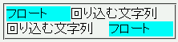
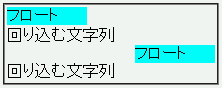

W3CのCSS勧告ではclearプロパティにallという値は定義されていない。しかしWinIEはall値をboth値と同じように扱う。
<div style="float:left; width:5em; background:aqua;">フロート</div> <div style="clear:all;">回り込む文字列</div> <div style="float:right; width:5em; background:aqua;">フロート</div> <div style="clear:all;">回り込む文字列</div>
clearプロパティを指定したdiv要素の内容物はフロートの左右に回り込んで表示されるはずです。
Netscape7.1標準モード
WinIE6.0標準モード
公式リファレンスでもclearプロパティにallという値は定義されていません。
ちなみに、WinIE4.0のリファレンスではstyleオブジェクトのclearプロパティで使用可能な値の一覧にallが存在します。br要素のclear属性に合わせた実装と思われますが、これが影響しているのかもしれません。